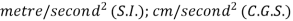
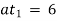
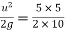
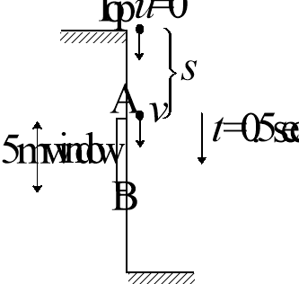
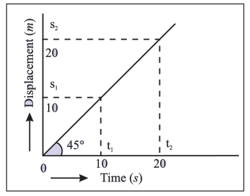
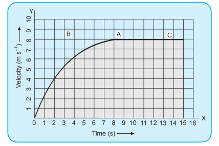

Science (from the Latin scientia, meaning “knowledge”) may be defined as an organized body of knowledge about the natural universe and the processes by which that knowledge is acquired and tested.
In general, there are social sciences, which deal with human society and individual relationships, and natural sciences, which investigate the natural universe. In turn, the natural sciences are divided into the biological sciences (sometimes called life sciences), which are concerned with the study of living matter, and the physical sciences, which involve the study of nonliving matter.
Physical science is classified into five major divisions (Fig):
Physics, the most fundamental of the divisions, is concerned with the basic principles and concepts of matter and energy.
Chemistry deals with the composition, structure, and reactions of matter.
Astronomy is the study of the universe, which is the totality of all matter, energy, space, and time.
Meteorology is the study of the atmosphere, from the surface of the Earth to where it ends in outer space.
Geology is the science of the planet Earth: its composition, structure, processes, and history.
(The last three physical sciences are sometimes combined as Earth and Space Science.)
Physics is a science dealing with inanimate nature. It studies the properties of matter, its various changes, the laws describing these changes and the relationships between different phenomena.
It is a science based on experiments, observation, and measurement. Experiments involve making things change. Observation is when scientists watch what they are studying very carefully. Measurement is describing things by their weight, size, or temperature.
Physics looks at how tiny atoms are put together. Atoms are tiny particles that make up everything in the universe. Physics looks at how huge planets and stars move. It helps scientists understand the way matter acts. Matter includes the solids, liquids, and gases in the universe. Physics also helps scientists understand how energy acts.
Physical quantity and its measurement in physics
A special feature of physics in comparison with other sciences is that while studying the properties of matter and its changes, various physical quantities are introduced. These quantities can be measured and expressed by figures.
Physics deals with quantities that can be measured. Thus, you won't find concepts such as honesty, love, and courage as primary topics of discussion in a physics book.
Mechanics
Heat
Waves
Optics
Electricity
Magnetism
Modern physics
Mechanics is study of forces and action due to forces which include motion.
Mechanics is divided into two branches called statics and dynamics
Statics: This involves study of forces and effect of forces on objects at rest
Dynamics : This involves study of forces and effect of forces on objects in motion
Two branches of dynamics are kinetics and kinematics.
Kinetics : It is branch of mechanics which is concerned about the causes (i.e. force, torque etc.) of motion.
Kinematics : This involves study of motion without studying the cause of motion i.e. force, torque etc.
Two types of physical quantities
Physical quantities are divided into two types
Scalar quantities
Some-physical quantities are completely specified by just a number and a unit. If we say that a person's mass is 70 kg, that the area of a farm is 160 acres, or that the frequency of a sound wave is 660 cycles/s, there is nothing more to add. These are examples of scalar quantities. That is just magnitude is sufficient to express scalar quantity.
Vector quantities
A quantity whose direction is significant is called a vector quantity. Thus velocity, which incorporates direction as well as speed, is a vector quantity. Vector quantities occur often in physics, and their arithmetic is different from the ordinary arithmetic of scalar quantities.
Motion is a very preliminary state of action associated with living and non-living beings. The study of the displacement, velocity and acceleration associated with moving bodies can make us understand the motion of bodies. To have an in-depth study of motion, equational representation and graphical analysis of various related quantities in motion with time is also done.
When a body does not change its position with time, we can say that the body is at rest.
While if a body changes its position with time, it is said to be in motion.
(i) An object is said to be a point object if it changes its position by distances which are much greater than its size.
(ii) A point or some stationary object with respect to which a body continuously changes its position in the state of motion is known as origin or reference point.
For a person standing on ground all the three passengers in the train are moving to the right. For the person in red shirt, the back two passengers are at rest. Thus we can say that rest and motion are relative terms that is rest and motion depends on the observer and whether the observer himself is moving or not.
Walls of your classroom are at rest or in motion.
Explanation
The walls of our classroom are at rest with respect to the ground or earth.
But, they are in motion with respect to an object or an observer outside the earth. This is because the earth is moving about its own axis as well as it is revolving around the sun. Thus, the state of rest and motion are not absolute, they are relative terms.
(i) One dimensional motion is the motion of a particle moving along a straight line.
(ii) Two dimensional motion A particle moving along a curved path in a plane has 2-dimensional motion.
(iii) Three dimensional motion Particle moving in space has 3-dimensional motion.
(B) According to state of motion
A moving body may cover equal distances in equal intervals of time or different distances in equal intervals of time. On the basis of above assumption, the motion of a body can be classified as uniform motion and non-uniform motion.
(i) Uniform motion:
When a body covers equal distances in equal intervals of time however small may be time intervals, the body is said to describe a uniform motion.
Example of uniform motion –
(a) An aeroplane flying at a speed of 600 km/h
(b) A train running at a speed of 120 km/h
(c) Light energy travelling at a speed of 3 × 108 m/s
(d) A spaceship moving at a speed of 100 km/s
(ii) Non-uniform motion:
When a body covers unequal distances in equal intervals of time, the body is said to be moving with a non-uniform motion.

Example of non-uniform motion –
(i) An aeroplane running on a runway before taking off.
(ii) A freely falling stone under the action of gravity.
(iii) An object thrown vertically upward.
(iv)When the brakes are applied to a moving car.
(i) Linear motion : A body has linear motion if it moves in a straight line or path.
Ex.(a) Motion of a moving car on a straight road.
(b) Motion of a ball dropped from the roof of a building.
(ii)Circular (or rotational) Motion : A body has circular motion if it moves around a fixed point.
A vertical passing through the fixed point around which the body moves is known as axis of rotation.
Ex.(a) Motion of an electric fan.
(b) Motion of merry-go-round

(iii) Vibratory motion :
A body has vibratory motion if it moves to and fro about a fixed point.
Ex.(a) Motion of a pendulum of a wall clock.
(b) Motion of a simple pendulum.
It is an object’s relation to a coordinate axis system.
A position is a measurement of a location, with reference to an origin. Positions can therefore be negative or positive. The symbol x is used to indicate position. x has units of length for example cm, m or km. Figure shows the position of a school. Depending on what reference point we choose, we can say that the school is 300 m from Hari’s house (with Hari’s house as the reference point or origin) or 500 m from Sitaram’s house (with Sitaram’s house as the reference point or origin).
The shop is also 300 m from Hari’s house, but in the opposite direction as the school. When we choose a reference point, we have a positive direction and a negative direction. If we choose the direction towards the school as positive, then the direction towards the shop is negative.

1. Write down the positions for objects at A, B, D and E. Do not forget the units.
2. Write down the positions for objects at F, G, H and J. Do not forget the units.
3. There are 5 houses on Newton Street, A, B, C, D and E. For all cases, assume that positions to the right are positive.
(a) You live in house C. What is your position relative to house E?
X(b) What are the positions of houses A, B and D, if house B is taken as the reference point?
1. −3m, −1m, +1m, +3m
2. +3m ,+1m, −1m, −3m,
3. (a) −40 or 40m[LEFT] (b) −20m or 20m[LEFT], 0m , +40m or 40m[RIGHT]
It is a scalar that represents the actual length of path traveled by an object.
In the figure below the actual distance covered while going to shop covering A and B is the distance covered.
It is an object’s change in position.
For example, if the initial position of a car is xi and it moves to a final position of xf, then the displacement is:
We use the shortcut ∆ to mean final − initial. Therefore, displacement can be written:
Important: The symbol ∆ is read out as delta. ∆ is a letter of the Greek alphabet and is used in Mathematics and Science to indicate a change in a certain quantity, or a final value minus an initial value. For example, ∆x means change in x while ∆t means change in t.
Displacement is the shortest distance from the starting point to the endpoint. Displacement has direction and is therefore a vector.
Figure shows the five houses we discussed earlier. Ram walks to school, but instead of walking straight to school, he decided to walk to his friend Sitaram’s house first to fetch him so that they can walk to school together. What is Ram’s displacement and what distance did he cover?
SOLUTION
Ram covers a distance of 400 m to Sitaram’s house and another 500 m to school. He covers a distance of 900 m. His displacement, however, is only 100 m towards the school. This is because displacement only looks at the starting position (his house) and the end position (the school). It does not depend on the path he travelled.
To calculate his distance and displacement, we need to choose a reference point and a direction. Let’s choose Ram’s house as the reference point, and towards Sitaram’s house as the positive direction (which means that towards the school is negative). We would do the calculations as follows:
Distance(d)= path travelled = 400 m + 500 m = 900 m
Displacement(∆x) = = −100 m + 0 m =−100 m
Sitaram walks to school with Ram and after school walks back home. What is Sitaram’s displacement and what distance did he cover?
SOLUTION
For this calculation we use Sitaram’s house as the reference point. Let’s take towards the school as the positive direction.
Distance(d)= path travelled = 500 m + 500 m= 1000 m
Displacement(∆x) = = 0 m 0 m = 0 m
Find the distance and displacement from A to B in each of the case
(a) (b)(c)
SOLUTION
(a) Distance is actual path length = 5 + 2 = 7 m
Displacement is shortest path from A to B = 3 m Right
(b) Distance = 5 + 5 = 10 m
Displacement = 0
(c) Distance = 5 + 7 = 12 m

Displacement is shortest path joining A to B = 2 m Left
A particle moves along the circular path AB as shown of radius R. Find the distance travelled and displacement from A to B. O is the center of the circle and A and B are at diametrically opposite points
SOLUTION
Distance is the actual path length = πR units
Displacement is shortest path from A to B which is the straight line AB.
Thus, magnitude of displacement = 2R and along the line AB i.e., horizontal
A rock is thrown straight upward from the edge of a 30 m cliff, rising 10 m then falling all the way down to the base of the cliff. Find the rock’s displacement.
SOLUTION
Displacement refers only to the object’s initial position and final position, not the details of its journey. Since the rock started on the edge of the cliff and ended up on the ground 30 m below, its displacement is 30 m downward.
In a track-and-field event, an athlete runs exactly once around an oval track, a total distance of 500 m. Find the runner’s displacement for the race.
SOLUTION
If the runner returns to the same position from which he left, then his displacement is zero.
The total distance covered is 500 m, but the net distance—the displacement—is 0
NOTE that distance is not the magnitude of the displacement unless the object has moved in a straight line.
Comparison between distance and displacement
|
Distance |
Displacement |
|
|
1 |
It is defined as the actual path traversed by a body. |
It is the shortest distance between two points which the body moves. |
|
2 |
It is a scalar quantity |
It is a vector quantity |
|
3 |
It can never be negative or zero |
It can be negative, zero or positive. |
|
4 |
Distance can be equal to or greater than displacement |
Displacement can be equal to or less than distance. |
|
5 |
Distance travelled is not a unique path between two points. |
Displacement is a unique path between two points. |
|
6 |
The distance between two points gives full information of the type of path followed by the body. |
Displacement between two points does not give full information of the type of path followed by the body. |
|
7 |
Distance never decreases with time, for a moving body it is never zero. |
Displacement can decrease with time fora moving body it can be zero. |
|
8 |
Distance in SI is measured in metre |
Displacement in SI is measured in metre. |
1. On an expedition, you walk 40 m due south and then 30 m due west. Determine how far and in what direction are you from your starting point.
2. If a person walks 1 km north, 5 km west, 3 km south, and 7 km east, find the resultant displacement vector.
3. A body moves over one fourth of a circular arc in a circle of radius r. Find the magnitude of distance travelled and displacement
4. What is the displacement of the point of the wheel initially in contact with the ground, when the wheel roles forward half a revolution will be (radius of the wheel is R)?
5. A man walks 40 m East, then 30 m North. (a). What was the total distance he walked? (b). What is his resultant displacement?
1. You are 50 m in a direction south 37° west from your starting point (i.e. S 37° W).
2. 2.8 km, 45° south of east.
3. ,
4. Hint :

5. The resultant displacement is then 50 m 37° north of east.
Speed is defined as distance travelled per unit time, i.e.,
— Its S.I. unit is m/s (meter/sec)
— It is a scalar quantity i.e., we have to specify only magnitude and not direction
When a particle covers equal distances in equal intervals of time, (no matter how small the intervals are) then it is said to be moving with uniform speed. In given illustration motorcyclist travels equal distance (= 5m) in each second. So we can say that particle is moving with uniform speed of 5 m/s.
(b) Non-uniform (variable) speed :
In non-uniform speed particle covers unequal distances in equal intervals of time. In the given illustration motorcyclist travels 5m in 1st second, 8m in 2nd second, 10m in 3rd second, 4m in 4th second etc. Therefore its speed is different for every time interval of one second. This means particle is moving with variable speed.
(c) Average speed : The average speed of a particle for a given ‘Interval of time’ is defined as the ratio of distance travelled to the time taken.
Average speed ;
Time averaged speed : When particle moves with different uniform speed  , , ... etc in different time intervals , , , ... etc respectively, its average speed over the total time of journey is given as
, , ... etc in different time intervals , , , ... etc respectively, its average speed over the total time of journey is given as
=
Special case : When particle moves with speed  upto half time of its total motion and in rest time it is moving with speed then
upto half time of its total motion and in rest time it is moving with speed then
Distance averaged speed : When a particle describes different distances .., , , ...... with different time intervals , , , ...... with speeds .. respectively then the speed of particle averaged over the total distance can be given as
(d) Instantaneous speed : It is the speed of a particle at particular instant. When we say “speed”, it usually means instantaneous speed. A speedometer in a vehicle measures speed but not velocity.
A vehicle covers the first 100 m of his journey with a speed of 20 ms–1 and the next 200 m of his journey with a speed of 40 ms–1. Find
(a) Total duration of his travel (b) Average speed during the motion
SOLUTION
(a) Given
(b) Total distance =
Total time taken = 10 sec.
A man walks on a straight road from his home to a market 2.5 km away with a speed of 5 km/h. Finding the market closed, he instantly turns and walks back home with a speed of 7.5 km/h. Find the average speed of the man over the interval of time 0 to 40 min.
SOLUTION
Time taken in going to market
As we are told to find average speed for the interval 40 min., so remaining time for consideration of motion is 10 min.
So distance travelled in remaining 10 min =
Hence, average speed = = .
If a car covers 2/5th of the total distance with v1 speed and 3/5th distance with v2 then what is the average speed?
SOLUTION
Average speed =
=
A vehicle traversed the first 30 km of its journey at a speed of 10 kmh–1, the second 15 km of journey and finally third 20 km at a speed of 10 kmh–1? What is the speed during the second portion of his journey if the average speed of the vehicle is kmh–1.
SOLUTION
Given
(where is the speed during the motion BC)
It is defined as displacement per unit time, i.e.,
— Its S.I. unit is m/s (meter/sec)
— It is a vector quantity i.e., we have to specify both magnitude and direction for it.
e.g.: A particle is moving towards east with 5 m/s.
Then its speed is 5 m/s and velocity is 5 m/s towards east.
(a) Uniform velocity : A particle is said to have uniform velocity, if magnitudes as well as direction of its velocity remains same and this is possible only when the particles moves in same straight line without reversing its direction.
(b) Non-uniform velocity : A particle is said to have non-uniform velocity, if either of magnitude or direction of velocity changes (or both changes).
(c) Average velocity : It is defined as the ratio of displacement to time taken by the body
;
(d) Instantaneous velocity : Instantaneous velocity is defined as rate of change of position vector of particles with time at a certain instant of time.
Comparison between average speed and average velocity
(a) Average speed is scalar while average velocity is a vector both having same units (m/s) .
(b) Average speed or velocity depends on time interval over which it is defined.
(c) For a given time interval average velocity is single valued while average speed can have many values depending on path followed.
(d) If after motion body comes back to its initial position then (as ) but .... and finite as .
(e) For a moving body average speed can never be negative or zero (unless while average velocity can be i.e. while = or < 0.
A particle moves along the path ACB to reach point B in a time of 5 sec. Length of path traversed is 500 m and the straight line joining A to B measures 100 m. Find
(a) Average speed (b) Average velocity
SOLUTION
(a) Total Distance = 500 m, Total time taken = 5 sec
Average speed = = = 100 ms–1
(b) Total Displacement = 100 m, Total time taken = 5 sec
Average velocity =  = = 20 ms–1
= = 20 ms–1
A particle traverses along a circular path from A to B with a speed of 10 ms–1. Find
(a) Distance (b) Average speed (c) Displacement (d) Average velocity
SOLUTION
(a) Distance travelled = πR = π m
Time taken = sec
(b) Average Speed = = = 10 m/s
(c) Displacement, AB = 2 m
(d) Average Velocity =  = = = m/s along AB.
= = = m/s along AB.
Consider a ship traversing from A to B due East 2 km, a distance 3 km due North from B to C, and finally a distance of 2 km due East from C to D. Find
(a) Total displacement
(b) If times are 2 hr, 1 hr and 1 hr respectively, what is the velocities during intervals AB, BC and CD and the average speed and average velocity of the entire journey.
SOLUTION
(a) Total displacement along East = 4 km
Total displacement along North = 3 km
Total displacement, AD = = = 5 km
(b) Given
= 1.25 kmh–1
A body travelling along a straight line traversed one-third of the total distance with a velocity 4 m/s. The remaining part of the distance was covered with a velocity 2 m/s for half the time and with velocity 6 m/s for the other half of time. What is the average velocity over the whole motion?
SOLUTION
Let S be the total distance travelled by the body. It t1 is the time taken to cover first one-third distance,
then, t1 =
Let t2 be the time for each of the remaining two journeys.
then, = 2t2 + 6t2 = 8t2
t2 =
Average velocity =  = = = 4 m/s
= = = 4 m/s
- Find the average speed (in the given units) of an auto that travels each distance in the given time.
(a) 150 mi in 3.0 h (in mi/h)
(b) 8550 m in 6 min 35 s (in m/s)
(c) 785 ft in 11.5 s (in ft/s)
- While driving at 90 km/h, how far can you travel in 3.5 h?
- An automobile is traveling at 55 mi/h. Find its speed (a) in ft/s. (b) in m/s. (c) in km/h.
- A truck traveling 100 km/h continues for 2.75 h. How far does it go?
- The average speed of a garbage truck is 60.0 km/h. How long does it take for the truck to travel 265 km?
- Find the velocity for each displacement and time.
(a) 160 km east in 2.0 h
(b) 1000 mi south in 8.00 h
(c) 275 km at 30° south of east in 4.50
- A train has a speed of 60 km/h for the first one hour and 40 km/h for the next half hour. Find its average speed in km/h.
-
A person completes half of its his journey with speed
 and rest half with speed . Find the average speed of the person.
and rest half with speed . Find the average speed of the person.
- A car moving on a straight road covers one third of the distance with 20 km/hr and the rest with 60 km/hr. Find the average speed.
- Is it possible for the displacement of a body to exceed the distance?
- A body travels a distance of 3 km towards East, then 4 km towards North and finally 1 km towards East. What is the distance travelled and resultant displacement?
- Give an example of a situation where the displacement is equal to the distance covered.
- A body moves 4 m towards east and then 3 m north. What are the displacement and distance covered by the body?
- A car travels 30 km at a uniform speed of 40 km/h and the next 30 km at a uniform speed of 20 km/h. Find its average speed.
- On a 120 km track, a train travels the first 30 km with a speed of 30 km/hr. How fast must the train travel the next 90 km so as to get average speed of 60 km/hr for the entire trip?
-
A body travels with velocity for time and with velocity
 for time in the same direction. Find the average velocity of the body.
for time in the same direction. Find the average velocity of the body.
- Consider the motion of the body in a circle of radius r travelling one full circle in a time t. What is the average velocity during the interval?
- A person travelling along a straight line from A to B covers half the distance with a velocity of 2 ms–1 and the other half with a velocity of 4 ms–1. What is the average velocity during the whole journey.
- When is the average velocity of a particle equal to the average speed in magnitude?
- (a) 50 mi/h (b) 21.6 m/s (c) 68.3 ft/s
- 320 km
- (a) 81 ft/s (b) 25 m/s (c) 89 km/h
- 275 km
- 4.42 h
- (a) 80 km/h, east (b) 125 mi/h, south (c) 61.1 km/h at 30° south of east
- 53.33 km/h
- 36 km/hr
- No
- 8 km; 5 km
- Motion along a straight line with constant acceleration
- 5 m
- 26.6 km/hr
- 90 km/hr
- zero
- ms–1
- Motion along a straight line
Acceleration is the change in velocity per unit time. In other words, acceleration measures how quickly velocity changes. That is,
This relationship can be expressed by the equation
Unit : 
In the following figure an automobile increases in speed from 6 m/s to 9 m/s in the first second, to 12 m/s in the next second, and to 15 m/s in the third second, so its acceleration is usually written 3 m/s2.
This means that the speed of the automobile increases 3 m/s during each second.
Deceleration is an acceleration that usually indicates that an object is slowing down.
When the car begins to slow down, the direction of the velocity is understood to be along the road in the direction pointing ahead of the car, and the direction of its acceleration (deceleration) is understood to be along the road in the direction pointing behind the car.
(i) Uniform acceleration : A body is said to have uniform acceleration if magnitude and direction of the acceleration remains constant during particle motion.
Note : If a particle is moving with uniform acceleration, this does not necessarily imply that particle is moving in straight line. e.g. Projectile motion.
(ii) Non-uniform acceleration : A body is said to have non-uniform acceleration, if magnitude or direction or both, change during motion.
The direction of average acceleration vector is the direction of the change in velocity vector as
Three ways to cause acceleration
There are three possible ways by which change in velocity may occur
|
When only direction of velocity changes |
When only magnitude of velocity changes |
When both magnitude and direction of velocity changes |
|
Acceleration perpendicular to velocity |
Acceleration parallel or anti-parallel to velocity |
Acceleration has two components one is perpendicular to velocity and another parallel or anti-parallel to velocity |
|
e.g. Uniform circular motion |
e.g. Motion under gravity |
e.g. Projectile motion (later classes) |
A car starts from rest (velocity = 0 ft/s) and attains a speed of 150 ft/s in 10.0 s. Find its acceleration.
SOLUTION

A car accelerates from 45 km/h to 80 km/h in 3.00 s. Find its acceleration (in m/s2).
SOLUTION
A plane accelerates at 8.5 m/s for 4.5 s. Find its increase in speed (in m/s).
SOLUTION
A driver stops accelerating and the vehicle moves at a rate of -3.00m/s2 for 5.00 s. Find the driver’s new speed if he was originally traveling at a velocity of 20.0 m/s. (The negative acceleration indicates that the acceleration is in the opposite direction of the velocity; that is, the object is slowing down.)
SOLUTION
- An automobile changes speed as shown. Find its acceleration
Speed Change Time Interval Find a
(a) From 0 to 15 m/s 1.0 s in m/s2
(b) From60 ft/s to 70 ft/s 1.0 s in ft/s2
(c) From 25 km/h to 90 km/h 5.6 s in m/s2
- A car starts from rest and reaches a speed of 62.5 m/s in 10.0 s. Find its acceleration (in m/s2).
- A train accelerates from 10 km/h to 110 km/h in 2 min 15 s. Find its acceleration (in m/s2).
- A plane accelerates at 30.0 ft/s2 for 3.30 s. Find its increase in speed in mi/h.
- A rocket accelerates at 10.0 m/s2 from rest for 20.0 s. Find its increase in speed in km/h.
- What is the acceleration of a road grader that goes from rest to 10.0 km/h in 5.20 s?
- How long (in seconds) does it take for a truck accelerating at 1.50 m/s2 to go from rest to 90.0 km/h?
- A bulldozer accelerates from rest to 3.00 m/s in 4.20 s. What is its acceleration?
- The speed of a delivery van increases from 2.00 m/s at 1.00 s to 16.0 m/s at 4.50 s. What is its average acceleration?
- A car is moving at 25.0 m/s when the driver applies the brakes. If it stops in 3.00 s, what is its average acceleration?
- If the car in Problem 10 was going twice as fast but was able to stop in the same time, what would its acceleration be?
- Starting from a stationary position, a car attains a velocity of 6 m/s in 30 s. Then driver of the car applies brakes such that velocity of the car comes down to 4 m/s in the next 5 seconds. Calculate the acceleration of the car in both the cases.
- Is it possible to have non-zero velocity for a time interval, while the acceleration is zero at any instant with in the time interval?
- A vehicle is moving along a straight track with a velocity of 30 ms–1. The driver applies brakes at time t1 = 10 sec. The velocity is found to be 15 ms–1 at time t2 = 15 sec. What is the average acceleration of the car?
- (a) 15 m/s2 (b) 10 ft/s2 (c) 3.2 m/s2
- 6.25 m/s2
- 0.206 m/s2
- 67.5 mi/h
- 720 km/h
- 0.534 m/s2
- 16.7 s
- 0.714 m/s2
- 4.00 m/s2
- -8.33 m/s2
- -16.7 m/s2
- 0.2 m/s2, –0.4 m/s2
- Yes
- –3 m/s2
Strictly speaking definitions are sufficient to solve any question. But to solve faster we can use equations of motion. Note that equations of motion are derived from the definitions itself.
The symbols used in equations of motion
We will be studying in this chapter only motion along straight line with constant acceleration. ( = constant)
(a) Acceleration is constant means both magnitude as well as direction of acceleration is constant.
(b) Some notations are:
— Initial velocity (at the beginning)
— acceleration
— final velocity (at the end of time interval)
— displacement from initial to final
= Distance travelled by the body in sec
This comes from the definition of acceleration
This comes from the definition of average velocity
The final velocity () and the initial velocity () are different variables than the average velocity (v). You cannot use an initial or final velocity for an average velocity. You may, however, calculate an average velocity (v) from the other two variables as long as the acceleration taking place between the initial and final velocities is uniform. An example of such a uniform change would be an automobile during a constant, straight-line acceleration. To find an average velocity during a uniform acceleration, you add the initial velocity and the final velocity and divide by 2. This averaging can be done for a uniform acceleration that is increasing the velocity or for one that is decreasing the velocity. In symbols,
From the defining equation for average acceleration,
This can be substituted into the equation for displacement

Starting from rest at t = 0.0 s, a car accelerates uniformly at 4.1 m/s2. What is the car’s displacement from its initial position at 5.0 s?
SOLUTION
u = 0.0 m/s a = 4.1 m/s2 t = 5.0 s s = ?
=51.25 m
The car’s displacement at 5.0 s is 51.25 m
Note : In this example, as in many motion problems, there is likely more than one method for finding the solution. Practice is necessary to help you develop skill in solving this type of problem efficiently.
A body A moves with a uniform acceleration and zero initial velocity. Another body B, starts from the same point moves in the same direction with a constant velocity . The two bodies meet after a time t. Find the value of  .
.
SOLUTION
Let they meet after time 't' .
Distance covered by body A = ;
Distance covered by body B = and
.
A body starts from rest and travels with uniform acceleration. If it travels at rate of 36 km/hr after 10 sec. Find (a) acceleration (b) average velocity during this motion (c) displacement and distance travelled
SOLUTION
Given : velocity after 10 sec
v = 36 km/hr = 36 × = 10 m/s
Now, choosing forward as positive direction (→ +), we have
u = 0, v = +10 m/s, t = 10 sec
(a) v = u + at
10 = 0 + a × 10
a = 1 m/s2
Positive sign implies towards right.
(b) vavg = = 5 m/s
(c) s = ut + or directly we can write s =
s = 5 × 10 = 50 m
Since body is not changing direction,
distance = displacement = 50 m
A car going with speed of 20 m/s was brought to rest by applying brakes in 10 sec. Assuming retardation to be constant find (a) retardation (b) distance travelled before stopping.
SOLUTION
Choosing forward direction as positive (→ +), we have
u = +20 m/s, v = 0, t = 10 sec
(a) v = u + at
0 = 20 + a × 10
a = –2 m/s2
Negative sign shows acceleration is towards left or it is retardation
(b) Here distance = displacement
So, s = ut + or s =
s =
s = 100 m
A particle starts with initial velocity u = 10 m/s as shown and acceleration is 3 m/s2 in opposite direction. Find velocity after 5 sec.
SOLUTION
Acceleration is constant 3 m/s2 ←
So, we can apply equation of motion, we will choose suitable equation which will give required quantity i.e.,
v = u + at
Choosing forward direction as positive (→ +)
v = 10 + (–3)5 {acceleration is opposite in direction so negative}
v = –5 m/s
Negative sign shows that after 5 seconds velocity will be towards left as right side we choose positive.
A car, moving with a speed of 50 km/hr, can be stopped by brakes after at least 6m. If the same car is moving at a speed of 100 km/hr, what is the minimum stopping distance ?
SOLUTION
A sprint cyclist starts from rest and accelerates at 1 m/s2 for 20 seconds. He then travels at a constant speed for 1 minute and finally decelerates at 2 m/s2 until he stops. Find his maximum speed in km/h and the total distance covered in metres.
SOLUTION
First stage
u = 0 a = 1 m/s2 t = 20 s
We have v = u + at = 0 + 1 m/s2 × 20 s
= 20 m/s = 20 × km/h = 72 km/h
The distance s moved in the first stage is given by
s = ut + = 0 × 20 s + × 1 m/s2 × 202 = × 1 m/s2 × 400 = 200 m
Second stage
u = 20 m/s (constant) t = 60 s
distance moved = speed × time = 20 m/s × 60 s = 1200 m
Third stage
u = 20 m/s
v = 0
a = −2 m/s2 (deceleration)
We have
v2 = u2 + 2as
Answers
Maximum speed = 72 km/h
Total distance covered = 200 m + 1200 m + 100 m = 1500 m
The average velocity of a body moving with uniform acceleration travelling a distance of 3.06 m is 0.34 ms–1. If the change in velocity of the body is 0.18ms–1 during this time, what is its uniform acceleration?
SOLUTION
and
A particle travels 10m in first 5 sec and 10m in next 3 sec. Assuming constant acceleration what is the distance travelled in next 2 sec.
SOLUTION
Let initial velocity of particle =
for first 5 sec of motion , so by using
…. (i)
for first 8 sec of motion
 .... (ii)
.... (ii)
By solving (i) and (ii)
Now distance travelled by particle in total 10 sec.
by substituting the value of and we will get m
So the distance in last 2 sec = – m
A particle moving in a straight line with uniform acceleration has velocities 7 m/s at A and 17 m/s at C. B is the mid point of AC. Find (a) velocity at B (b) average velocity between A and B and between B and C (c) ratio of time to go from A to B to that from B to C.
SOLUTION
Taking forward direction as positive (→ +) and A as initial point.
(a) We have to use equation which involves velocities and distances —
v2 = u2 + 2as
At C: 172 = 72 + 2a(2x) ........... (1)
At B: = 72 + 2a(x) ........... (2)
Cancelling ‘x’ from the two equations we get,
= 169
(b)
(c) : v = u + at
13 = 7 + at1
 ---(1)
: v = u + at
17 = 13 + at2
----(2)
dividing (1) by(2) we get
A car starts from rest and accelerates uniformly for 10 sec to a velocity of 8 m/s. It then runs at a constant velocity and is finally brought to rest in 6 m with a constant retardation. The total distance covered by the car is 584 m. Find the value of acceleration, retardation and total time taken.
SOLUTION
In the above diagram, car starts from A and achieves velocity 8 m/s at B in 10 sec.
So, for AB, v = 8 m/s, u = 0 m/s, t = 10 sec
v = u + at
8 = 0 + a × 10
a = 0.8 m/s2
and = 0 × 10 + × 0.8 × 102 = 40 m
After that car runs with constant speed 8 m/s from B to C point. Let that distance be sBC. After that it comes to rest at point D covering the distance of 64 m from C to D.
For C to D, , u = 8 m/s, v = 0 m/s
v2 = u2 + 2as
0 = 82 – 2 × a × 64
a = 0.5 m/s2
and v = u + at
Now, the total distance,
So, total time
A particle is moving along a straight line with a constant acceleration of –2 ms–2. It passes through a point A on the line with a velocity of 6 ms–1. Find the displacement from A of the particle after 5 seconds and the distance travelled by the particle in this time.
SOLUTION
As velocity and acceleration are opposite, particle will retard and stops at some time and then return back due to acceleration.
Taking direction forward positive (→ +)
u = +6 m/s, a = –2 m/s2, t = 5 sec, displacement = s
 = 5 m =
= 5 m =
Distance travelled is actual path =
To find s1: v2 = u2 + 2as
0 = 62 + 2 × (–2) × s1
Using above, we get = 4 m
Total Distance = = 9 + 4 = 13 m
- If initial velocity is 10 m/s in a uniform straight line motion such that after 5 sec. the velocity becomes 20 m/s. Find acceleration, displacement and average velocity.
- If u = 10 m/s, v = –5 m/s, t = 6 sec find displacement in fifth second and interpret it.
- A cyclist accelerates from rest to 5 ms–1 in 2 sec. A horse accelerates from 15 ms–1 to 18 ms–1 also in 2 second.
(a) Find the acceleration of the cyclist (b) Acceleration of the horse
- Which of the following statements is incorrect?
(a) A body can have varying velocity without varying speed.
(b) A body can have varying speed without varying velcoity
(c) A body can have non-zero acceleration without varying velocity.
(d) A body can have non-zero acceleration without varying the speed.
- Which of the two can be zero under certain conditions? Average speed of a moving body or Average velocity of a moving body.
- A car acquires a velocity of 72 km per hour in 20 seconds just after the start. Calculate the acceleration of the car.
- A moving train is brought to rest within 20 seconds by applying brakes. Find the initial velocity, if the retardation due to brakes is 2 m/s2.
- A body starting from rest travels with uniform acceleration. If it travels 100 m in 5 sec, what is the value of acceleration?
- A racing car has a uniform acceleration of 4 m/s2. What distance will it cover in 10 seconds after the start.
- A scooter moving at a speed of 10 m/s is stopped by applying brakes which produces a uniform retardation of 0.5 m/s2. How much distance will be covered by the scooter before it stops
- A train starting from rest attains a velocity of 72 km/hr in 5 minutes. Assuming that the acceleration is uniform, find (i) the acceleration and (ii) the distance travelled by the train while it attained this velocity.
- A particle is moving with uniform acceleration along a straight line passes three successive points A, B and C where the distances AB : BC is 3 : 5 and the time taken from A to B is 40 sec. If the velocities at A and C are 5 m/s and 15 m/s respectively. Find (a) the velocity of the particle at B, (b) acceleration of the particle.
- A subway train starts from rest at a station and accelerates at a rate of 2 ms–2 for 10 sec. It then runs at a constant speed for 30 sec and slows down at the rate of 4 ms–2, until in stops at the next station. Find the total distance covered.
- 2 m/s2, 75 m, 15 m/s
- –1.25 m, In the 5th second body is moving backward
- (a) 2.5 m/s2 (b) 1.5 m/s2
- (b), (c)
- Average velocity of a moving body
- 1 m/s2
- 40 m/s
- 8 m/s2
- 200 m
- 100 m
- m/s2, 3000 m
- (a) 10 m/s, (b) m/s2
- 750 m
Effect of force of gravity on motion of objects
Gravity is one of the most important force which shapes our everyday experience. If we neglect air resistance force, the gravitational pull of the Earth produces an acceleration of in any object, irrespective of its mass, as long as the object is close to the surface of the Earth. This acceleration is known as acceleration due to gravity. For ease of calculation, we will consider its value to be in many problems. It was Galileo who established that acceleration due to gravity is same for all objects. A feather and an apple will cover equal distances in equal interval if dropped together into a vacuum chamber.
“Force of gravity does not depend on the mass of the object”
This means that in a vacuum an apple and a feather would both accelerate downwards at the same rate.
Value of acceleration due to gravity and its symbol
On earth, the acceleration due to gravity is represented by the letter g and is approximately 9.8 m s-2• The actual value of the acceleration can vary by very small amounts in different places due to the changing radius of the Earth and height above sea level.
Sign convention for problems involving motion under gravity
When solving problems about vertical motion you can choose the positive direction to be either upwards or downwards. Acceleration due to gravity is always downwards, so if the positive direction is upwards then a = -9.8 m s-2
Time of flight and speed of projection
The total time that an object is in motion from the time it is projected (thrown) upwards to the time it hits the ground is called the time of flight. The initial speed is sometimes called the speed of projection.
Time taken to reach maximum height is called time of ascent
Time taken to reach back the point of projection from maximum height is called time of descent
Taking upwards direction as positive (↑ +)
u = +u, v = 0 (at maximum height), a = –g, s = ?
Using appropriate equation of motion —
v2 = u2 + 2as
0 = u2 + 2(–g)s
s =
Taking upwards direction as positive (↑+)
u = +u, v = 0 (at maximum height), a = –g, t = ?
Using appropriate equation of motion —
v = u + at
0 = u + (–g)t

Taking upwards direction as positive (↑+)
u = +u, a = –g, s = 0 {when body comes back the displacement is zero}
Using appropriate equation of motion —
s = ut + at2
0 = ut + (–g)t2
NOTE: Time for upward motion = time for downward motion =
Speed at which the vertically projected body returns back
Taking upwards direction as positive ( +)
u = +u, a = –g, s = 0, v = ?
Using appropriate equation of motion —
v2 = u2 + 2as
v2 = u2 + 0
v = ± u
Since at coming down velocity must be downward, thus magnitude of velocity i.e., speed is same at it was thrown i.e., u. But since direction is opposite to initial velocity, we should say velocity is not same.
A body is projected with a speed of 10 ms–1 from the ground. Find
(a)time of flight
(b)maximum height reached
(c)time to reach half the maximum height
(d)speed of particle at half the maximum height
SOLUTION
Taking upward as positive direction (↑+), u = +10 m/s, a = –10 m/s2
{Here we are choosing g = 10 m/s2 as u = 10 m/s}
(a) s = 0 when it comes down.
Using, s = ut + at2
= 2 sec
(b) At maximum height v = 0,
using v2 = u2 + 2as we get
Hmax = = 5 m
(c) u = 10 ms–1, a = –10 ms–2, s = +2.5 m
s = ut + at2
2.5 = 10t – × 10 × t2
5t2 – 10t + 2.5 = 0
t =
t = 0.29 sec or 1.71 sec (0.29 s while going up and 1.71 s while going down)
(d) v = u + at
v = 10 – 10 × 0.29
v = 7.1 ms–1
A particle is projected from roof of a building 20 m high with a initial velocity 15 ms–1 vertically upwards. Find time taken to reach the ground
SOLUTION
Taking upward direction positive (↑+).
We know
u = +15 m/s, a = –10 m/s2, s = –20 m
‘s’ is negative because what we are looking for is displacement between initial and final position i.e., shortest path between initial and final position, which is downward 20 m.
Using appropriate equation of motion we get,
s = ut + at2
–20 = 15 × t + × (–10) × t2
–40 = 30t – 10t2
t2 – 3t – 4 = 0
t2 – 4t + t – 4 = 0
t(t – 4) + 1(t – 4) = 0
(t – 4)(t + 1) = 0
t = 4 sec and t = –1 sec
time taken to come down is 4 sec.
NOTE: t = –1 sec is not possible but it shows that it will take one second to go directly downward.
A stone is thrown vertically upwards with a speed of 5 ms–1 from the top of a building 10 m high. Find
(a) the time after which it strikes the ground
(b) the velocity with which it strikes the ground
(c) the total distance covered by the stone (Take g = 10 m/s2)
SOLUTION
(a) Taking downward direction positive (↓+). We know
u = –5 m/s, a = +10 m/s2, s = +10 m, t = ?
s = ut + at2
t2 – t – 2 = 0
(t – 2)(t + 1) = 0
t = 2 sec (correct), t = –1 sec (incorrect)
(b) Using, v = u + at
v = –5 + 10 × 2 = 15 m/s
Positive sign shows that direction is downward at time of striking the ground
(c) Displacement = 10 m, Distance = 2S + 10
S is the displacement at maximum height from point of projection, which we know directly
s =  = 1.25 m
Distance = 2S + 10 = 2 × 1.25 + 10 = 12.5 m
One body is dropped from a top of a tower 20 m high and simultaneously another body is thrown upward from the foot of the tower with speed 10 m/s. Find where they will meet.
SOLUTION
When we say we drop the body that means initial velocity is zero.
For 1st body: Taking downward direction positive (↓+).
u = 0, a = 10 m/s2, s = s, t = t
s = ut + at2
s = –0 × t + × 10 × t2 = 5t2 ........ (1)
For 2nd body: Taking upward direction positive (↑+).
u = +10 m/s, a = –10 m/s2, s = 20 – s, t = t
s = ut + at2
20 – s = 10 × t + × (–10) × t2
20 – s = 10t – 5t2 ........ (2)
Solving (1) and (2), to get s and t:
Adding we get, 20 = 10t
t = 2 sec
Substituting in (1), we get
s = 5t2 = 5 × 4 = 20 m downward
They meet at ground in the following way
A stone is dropped from the top of a cliff and 1 sec later another stone is thrown downwards with a velocity of 20 ms–1. How far below the top will the second stone overtake first?
SOLUTION
Let 2nd stone overtakes the 1st stone after time t sec at a distance s below.
For 2nd stone: Taking downward direction positive (↓+).
u = +20 m/s, a = +10 m/s2, s = s, t = t
s = ut + at2
s = 20 × t + × 10 × t2
s = 20t + 5t2 ........ (1)
For 1st stone: Taking downward direction positive (↓+).
u = 0 m/s, a = +10 m/s2, s = s, t = t + 1
Time is taken t + 1 because 1st stone was thrown 1 sec before 2nd stone.
s = ut + at2
s = 0 × t + × 10 × (t + 1)2
s = 5(t + 1)2 ........ (2)
Equating s in (1) and (2), we get
20t + 5t2 = 5(t + 1)2
20t = 5{(t + 1)2 – t2}
4t = (2t + 1)·1
Substituting in (2) we get —
s = 5(0.5 + 1)2 = 11.25 m
SOLUTION
Let velocity of particle at A is v.
Applying equation of motion from A to B
Taking downward direction positive (↓+).
u = v m/s, a = +10 m/s2, s = 5 m, t = 0.5 sec
s = ut + at2
5 = v × 0.5 + × 10 × (0.5)2
5 = 0.5v + 5 × 0.25
v = = 7.5 m/s
Now applying equation of motion from Top to A:
Taking downward direction positive (↓+).
u = 0, v = 7.5 m/s, a = +10 m/s2, s = +s m

v2 = u2 + 2as
(7.5)2 = 0 + 2 × 10 × s
s = = 2.81 m
- Consider a particle as shown.
Find (a) displacement and distance travelled in 4 sec.
(b) velocity after 6 sec.
(c) velocity after travelling 12 m
(d) displacement in 5th second
- Consider a particle as shown,
Find (a) displacement and distance travelled in 5 sec
(b) velocity after 6 sec
(c) velocity after travelling 15 m
(d) displacement in 6th second
- A particle is moving with 10 m/s experiences acceleration of 4 m/s2 in same direction for 2 sec and then acceleration direction reverses with magnitude 2 m/s2. Find
(a) velocity after 4 sec (b) average velocity and average acceleration in 4 sec
(c) displacement in 6th sec (d) displacement and distance in 10 sec
- A body is projected upwards with velocity 20 m/s. Find
(a) maximum height (b) time to come back (c) velocity after 2 sec (d) distance travelled when it comes down (e) displacement in 3 sec and displacement in 3rd sec.
- A stone is thrown vertically upwards with a speed of 10 m/s from the top of a building 15 m high. Find
(a) the time after which it strikes the ground
(b) the velocity with which it strikes the ground
(c) the total distance covered by the stone (take g = 10 m/s2)
- One body is dropped from a top of a tower 15 m high and simultaneously another body is thrown upward from the foot of the tower with speed 10 m/s. Find where they will meet.
- A stone is dropped from the top of a cliff. 2 sec later another stone is thrown downwards with a velocity of 20 ms–1. How far below the top will the second stone overtake first?
- A particle is projected vertically upwards with an initial velocity 15 ms–1. During the 2nd second of its motion what is (a) displacement, (b) distance covered?
- A fellow student makes the following comment during a study session: “A freely falling object falls a greater distance during each second than the total distance fallen in all the previous seconds.”. This statement
(A) is always true (B) is true only for sufficiently short times
(C) is true for sufficiently long times (D) is never true
- A boy jumps off a high dividing board above a swimming pool. Halfway between the board and the water he tosses a ball upward. Ignoring air friction, the instant after the ball leaves his hands the vertical component of the acceleration of the ball
(A) is positive, but then decreases through zero to –9.8 ms–2
(B) is zero, but then decreases to –9.8 ms–2
(C) is between zero and –9.8 ms–2, but then decreases to –9.8 ms–2
(D) is –9.8 ms–2
- Can an object be increasing in speed as the magnitude of its acceleration decreases. If so, give an example. If not, explain why?
- A ball B is projected vertically upwards from a point 0 with speed 12 ms−1. Find a the greatest
height above 0 reached by B, b the total time before B returns to 0.
- A book falls off the top shelf of a bookcase. The shelf is 1.4 m above a wooden floor. Find a the
time the book takes to reach the floor, b the speed with which the book strikes the floor.
- A ball is projected vertically upwards, from a point X which is 7 m above the ground, with speed 21m s−1• Find a the greatest height above the ground reached by the ball, b the time of flight of the ball.
- A particle is projected vertically upwards from a point O with speed u ms−1. The greatest height reached by the particle is 62.5 m above O. Find a the value of u, b the total time for which the particle is 50 m or more above O.
- A ball A falls vertically from rest from the top of a tower 63 m high. At the same time as A begins to fall, another ball B is projected vertically upwards from the bottom of the tower with speed 21m s−1• The balls collide. Find the distance of the point where the balls collide from the bottom of the tower.
- A ball is projected vertically upwards from a point 0 with speed 14ms-1. Find the greatest height above 0 reached by the ball.
- A well is 50 m deep. A stone is released from rest at the top of the well. Find how long the stone takes to reach the bottom of the well.
- A book falls from the top shelf of a bookcase. It takes 0.6 s to reach the floor. Find how far it is from the top shelf to the floor.
- A particle is projected vertically upwards with speed 20m s−1 from a point on the ground. Find the time of flight of the particle.
- A ball is thrown vertically downward from the top of a tower with speed 18m s−1• It reaches the ground in 1.6 s. Find the height of the tower.
- A pebble is catapulted vertically upwards with speed 24m s−1. Find a the greatest height above the point of projection reached by the pebble, b the time taken to reach this height.
- A ball is projected upwards from a point which is 4 m above the ground with speed 18m s−1. Find a the speed of the ball when it is 15m above its point of projection, b the speed with which the ball hits the ground.
- A particle P is projected vertically downwards from a point 80 m above the ground with speed 4 m s−1 Find a the speed with which P hits the ground, b the time P takes to reach the ground.
- A particle P is projected vertically upwards from a point X. Five seconds later P is moving downwards with speed 10m s−1. Find a the speed of projection of P, b the greatest height above X attained by P during its motion.
- A ball is thrown vertically upwards with speed 21m s−1 It hits the ground 4.5 s later. Find the height above the ground from which the ball was thrown.
- A stone is thrown vertically upward from a point which is 3m above the ground, with speed 16m s−1• Find a the time of flight of the stone, b the total distance travelled by the stone.
- A particle is projected vertically upwards with speed 24.5 m s−1. Find the total time for which it is 21m or more above its point of projection.
- A particle is projected vertically upwards from a point 0 with speed u m s−1• Two seconds later it is still moving upwards and its speed is u m s−1• Find a the value of u, b the time from the instant that the particle leaves 0 to the instant that it returns to 0.
- A ball A is thrown ve1tically downwards with speed 5 m s−1 from the top of a tower block 46 m above the ground. At the same time as A is thrown downwards, another ball B is thrown vertically upwards from the ground with speed 18ms−1• The balls collide. Find the distance of the point where A and B collide from the point where A was thrown.
- A ball is released from rest at a point which is 10m above a wooden floor. Each time the ball strikes the floor, it rebounds with three-quarters of the speed with which it strikes the floor. Find the greatest height above the floor reached by the ball a the first time it rebounds from the floor, b the second time it rebounds from the floor.
- A particle P is projected vertically upwards from a point 0 with speed 12m s−1. One second after P has been projected from 0, another particle Q is projected vertically upwards from 0 with speed 20m s−1• find a the time between the instant that P is projected from 0 and the instant when P and Q collide, b the distance of the point where P and Q collide from 0.
- (a) 72 m, 72 m (b) 30 m/s (c) +(216) m/s (d) 25.5 m
- (a) 20 m, 20.5 m (b) –3 m/s (c) +(21) m/s (d) –2 m
- (a) 14 m/s (b) 15 m/s, 1 m/s2 (c) 11 m (d) 108 m, 108 m
- (a) 20 m (b) 4 sec (c) 0 m/s (d) 40 m (e) +15 m, –5 m
- (a) 3 sec (b) –20 m/s (c) 25 m
- 11.25
- Never
- (a) 0 (b) 2.5 m
- D
- D
- Yes
- The greatest height above 0 reached by B is 7.4 m, The time taken for B to ret urn to 0 is 2.4 s,
- The time taken for the book to reach the floor is 0.53 s The book hits the floor with speed 5.2 ms-1,
- The greatest height reached by the ball above the ground is 30m, The time of flight of the ba ll is 4.6 s,
- u = 35 ms-1, The total time for which the particle is 50 m or more above 0 is 3.2 m,
- The balls collide 19m from the bottom of the tower,
- 10 m
- 3.2 s
- 1.8 m
- 4.1 s
- 41 m
- a 29 m b 2.4 s
- a 5.5 m s–1 b 20 m s–1
- a 40 m s–1 b 3.7 s
- a 39 m s–1 b 78 m
- 6.75 m
- a 3.4 s b 29 m
- 2.8 s
- a 29 b 6 s
- 30 m
- a 5.6 m b 3.1 m)
- a 1.4 s b 7.2 m
Graph is another method to study the motion of the particle.
Following three types of graphs are commonly used.
(i) Displacement – time graph
(ii) Velocity – time graph
(iii) Acceleration – time graph.
In displacement–time graph, displacement of the moving particle is plotted on y- axis and time on x-axis.
Displacement–time graph when the particle is at rest.
When the particle is at rest its displacement with respect to origin remains constant and the graph as shown in the figure becomes a straight line parallel to time axis. For example, this graph reads that the particle is at rest and is 5 m away from the origin.
Displacement–time graph, for the particle is in uniform motion
When the particle is in uniform motion i.e. it covers same distance in same time interval. The graph as shown in figure is a straight line inclined to time axis.

Since, velocity of the moving particle is defined as the ratio of change in its displacement to change in time the slope of the graph describes velocity. To find slope of the graph consider any two points A and B on the graph. Record the values of displacements as and and times as and corresponding to these points.
BASE, PERPENDICULAR AND HYPOTENUSE OF A RIGHT TRIANGLE
In ABC, if B = 900, then :
(i) ForA, we have :
Base = AB, Perpendicular = BC and Hypotenuse = AC.
(ii) ForC, we have :
Base = BC, Perpendicular = AB and Hypotenuse = AC.
So, in a right angled triangle, for a given angle,
(i) The side opposite to the right angle is called hypotenuse.
(ii) The side opposite to the right angle is called perpendicular.
(iii) The third side (r.e., the side forming the given angle with the hypotenuse), is called base.
TRIGONOMETRICAL RARIOS (T-RATIOS) OF AN ANGLE
In ABC, let B = 900 and let A be acute.
ForA, we have :
Base = AB, Perpendicular = BC and Hypotenuse = AC.
The T-ratios for A are defined as :
(i) Sine A = , written as sin A.
(ii) Cosine A = , written as cos A.
(iii) Tangent A =  , written as tan A.
, written as tan A.
|
θ (deg) |
θ (rad) |
sin(θ) |
cos(θ) |
tan(θ) |
|
0° |
0 |
0 |
1 |
0 |
|
30° |
π/6 |
|
|
|
|
45° |
π/4 |
|
|
|
|
60° |
π/3 |
|
|
|
|
90° |
π/2 |
1 |
0 |
undefined |
Special case
If a body returns back to the starting or reference point after travelling some distance away from the initial point, then the displacement-time graph will have both positive and negative slopes.
Example : When a ball is hit slowly with a bat, it rolls on the floor, and after hitting a wall, it comes back along the same path to the starting point.
Consider the displacement of the ball at different time intervals.
It can be observed that at t5 = 4 s, the ball travels a distance of 20 m, it hits the wall and returns back along the same line to the initial point.
The graph thus plotted has two straight lines, OA and AB, with two slopes, a positive slope and a negative slope (Fig.)
The positive slope = 5 m s–1 represents the uniform velocity of the ball from the initial point towards the wall and the negative slope = −5 m s–1 represents the uniform velocity of the ball after hitting the wall and towards the initial point.
The displacement-time graph of a body moving with uniform velocity is a straight line making an angle with the X-axis. The velocity of the body is directly proportional to this angle, which means larger the value of , greater is the velocity of the body.
For example, in Fig., body A makes a larger angle than body B which makes an angle .
The displacement-time graph of body A is more steeply inclined and has a higher velocity than the body B.
NOTE : The displacement-time graph can never be a straight line parallel to the Y-axis, that is, displacement axis, as this would mean that displacement of body is increasing without any increase in time or in other words, the velocity of the body is infinite, which is not possible.
Displacement–time graph, for the particle is moving with a non-uniform or variable velocity.
A body moving with a non-uniform velocity covers unequal distances in equal intervals of time.
(a) When the variable velocity increases with time
Consider the displacement of a body moving with variable velocity which is increasing with respect to time.
When a graph is plotted between time and displacement, a curve is obtained instead of a straight line (Fig. ).
The velocity at any instant of time can be obtained from the slope of the curve. To find the slope, a tangent is drawn on the curve at that instant or time.
For example, to find the velocity of the body at time , that is, at point A, a tangent BC is drawn.
which is the instantaneous velocity of the body at .
(b) When the variable velocity decreases with time
Consider the displacement of a body moving with variable velocity which is decreasing with respect to time.
When a graph is plotted between time and displacement, the curve obtained has slope which is decreasing with time (Fig. ).
Summary of Displacement-Time Graphs
|
Nature of displacement time graph |
Nature of motion of the body |
|
Straight line parallel to the time axis. |
The body is stationary. |
|
Straight line inclined at an angle towards time axis : • Positive slope • Negative slope |
The body is moving with uniform velocity. • Motion of body away from origin or initial point. • Motion of body towards origin or initial point. |
|
Curve : • With increasing slope • With decreasing slope |
The body is moving with variable velocity. • The velocity of body is increasing with time. • The velocity of body is decreasing with time. |
A graph showing change in velocity of the body with the change in time is called velocity-time graph.
In this graph, time t is taken on the X-axis and velocity of the body v is taken on the Y-axis. This graph is useful in finding :
1. Displacement of the body : In a certain time interval, the area enclosed between the velocity-time graph and X-axis gives the displacement of the body, as displacement = velocity × time.
The area enclosed above the time axis represents positive displacement, that is, distance travelled by the body away from the starting or initial point and the area enclosed below the time axis represents negative displacement, that is, distance travelled by the body towards the starting or initial point.
The total distance travelled by the body is the arithmetic sum of distance travelled in both directions whereas total displacement is obtained by adding them with proper signs which means the magnitude of total negative displacement is subtracted from the magnitude of total positive displacement.
Example : In the velocity-time graph of a body, as shown in Fig., the total distance travelled by the body = area of trapezium ABCD + area of triangle DEF, whereas total displacement of the body = area of trapezium ABCD – area of triangle DEF.
2. Acceleration of the body : The slope of the graph = Velocity/Time = Acceleration of the body.
If the slope of the graph is positive, it represents acceleration of the body and if the slope is negative, it represents retardation.
Case 1 : When the body is in motion with uniform velocity
Consider a body moving with a constant velocity, that is, its velocity does not change with change in time interval.
When a graph is plotted between time and velocity, a straight line parallel to the time axis is obtained, as shown in Fig.. From the graph, it can be seen that the velocity of the body is 20 m s–1 when time is zero. It remains same, when t = 1 s, 2 s, 3 s and so on as the velocity of the body is uniform with respect to time.
(a) The displacement of the body in 4 s = Area enclosed in the graph = Area of the rectangle ABCD
The area of the rectangle is given by AB × BC = 4 s × 20 m s–1 = 80 m.
(b) The slope of the graph is zero, hence acceleration is zero.
Case 2 : When the body is in motion with uniform acceleration
A body moving with uniform acceleration has equal increasing changes in velocity in equal intervals of time. Consider the increase in velocity of a body with change in time.
It can be observed that the velocity of body increases by equal amount in every 1 s interval of time; representing uniform acceleration.
When a graph is plotted between time and velocity, all the points lie on a straight line, inclined to the X-axis, that is, time axis, with a positive slope (Fig. )
(a) Displacement of the body in 4 s is given by the area of the triangle ABC.
Since area of right angled triangle

(b) Acceleration of the body = Slope of the line CA
Case 3 : When the body is in motion with uniform retardation
A body moving with uniform retardation has equal decreasing changes in velocity in equal intervals of time. Consider the decrease in velocity of a body with change in time intervals.
It can be observed that the velocity of body decreases by equal amount in every 1 s interval of time; representing uniform retardation and comes to rest when t5 = 4 s.
When a graph is plotted between time and velocity, all the points lie on a straight line, inclined to the X-axis, that is, time axis, but with a negative slope (Fig.)
(a) Displacement of the body in 4 s is given by the area of the triangle ABC, as in the case of uniform acceleration.
(b) Retardation of the body = Slope of the line AB
The negative sign implies that the body is retarding.
The velocity-time graph can never be a straight line parallel to the Y-axis, that is, velocity axis, as this would mean that velocity of the body is increasing without any increase in time or in other words, the acceleration of the body is infinite, which is not possible.
Case 4 : When the initial velocity of the body is not zero and increases uniformly with time.
For a body, which is initially not at rest but moving with some constant velocity, the velocity-time graph does not start from the origin but starts from the point corresponding to the initial velocity on the velocity axis.
Consider the increase in velocity of a body at different instants of time.
It can be observed that the velocity of body is 5 m s–1 at t1 = 0 s and increases by equal amount in every 1 s interval of time; representing uniform acceleration.
When a graph is plotted between time and velocity, all the points lie on a straight line inclined to the X-axis, that is, time axis, with a positive slope.
But the line begins from v1 = 5 m s–1 (Fig.)
(a) Displacement of the body is given by area of trapezium ACED.
Since area of trapezium
(b) Acceleration = Slope of the graph
Case 5 : When a body is in motion with uniform velocity for some time and then its velocity changes instantaneously
Consider the changes in velocity of a body with change in time intervals.
The negative sign in the velocity means that the body returns back to the initial or starting point.
NOTE
From the graph (Fig. 3.24), it can be observed that the body initially at rest, travels with a uniform increasing velocity of 5 m s–1 for the first 2 s. When the velocity becomes 10 m s–1, it remains constant for the next 2 s after which the velocity changes instantaneously. It decreases to 5 m s–1 for the next 3 s and the body moves towards the starting point. For lines AB and BC, the velocity is positive as the body moves away from the initial point and for line EF, it is negative as the body returns back to the initial point.

(a) Total distance covered by the body is the arithmetic sum of areas covered in the graph.
Total distance covered by the body in 7 s = area of triangle ABH + area of rectangle BCDH + area of rectangle DEFG
(b) However, for calculating displacement, proper signs have to be taken into account.
Total displacement of the body in 7 s = area of triangle ABH + area of rectangle BCDH − area of rectangle DEFG

Case 6 : When a body is in motion with non-uniform or variable acceleration
A body moving with variable acceleration has unequal changes in velocity in equal intervals of time.
The velocity-time graph for non-uniform acceleration is a curve with positive slope, as shown in Fig.
For a body moving with non-uniform retardation, the curve will have negative slope (Fig.)
When the acceleration of a body increases non- uniformly for some time and then becomes zero, the graph looks like as shown in Fig.

To find the acceleration at any instant of time, a tangent is drawn on the curve at that point and the slope of the tangent then gives the acceleration.
For example, in the graph, there are 100 squares lying within the curve and time axis.
Since area of 1 square = 1 × 1 = 1 m2 (from the scale of the graph), thus displacement of the body = 100 × 1 = 100 m.
Now, to find acceleration at point A on the curve, we need to find the slope of line BC at the point A on the curve.
Thus, acceleration at point A, when t = 8 s is zero.
It is evident from the graph that the velocity of the body is constant from 8 s to 15 s, hence acceleration is zero.
|
Summary of Velocity-Time Graphs |
|
|
Nature of velocity-time graph |
Nature of motion of the body |
|
Straight line parallel to time axis. |
The body is moving with uniform velocity and the acceleration of the body is zero. |
|
Straight line inclined at an angle towards time axis : • Positive slope • Negative slope |
The body is moving with uniform acceleration (the velocity is variable). • Velocity of the body increases with time, that is, acceleration. • Velocity of the body decreases with time, that is, retardation. |
|
Curve : • Curve moving upwards, that is, with increasing slope. • Curve moving downwards, that is, with decreasing slope. |
The body is moving with variable acceleration (the velocity is variable). • The velocity of body is increasing non-uniformly with time. • The velocity of body is decreasing non-uniformly with time. |
A graph showing change in acceleration of the body with the change in time is called acceleration-time graph.
In this graph, time t is taken on the X-axis and acceleration of the body a is taken on the Y-axis. This graph is useful in finding the velocity (or speed, as in linear motion, speed and velocity are same) of a body, as velocity = acceleration × time. The area enclosed between the graph and time axis gives the change in velocity of the body.
Following are the various types of acceleration-time graphs, depending on different situations :
Case 1 : When the body is at rest or is moving with uniform velocity
If a body is at rest or is in motion with a uniform velocity, then acceleration of the body is zero at any instant of time.
The acceleration-time graph for such a case is a straight line PQ (Fig.) coinciding with the time axis.
Case 2 : When the body is in motion with uniform acceleration
A body moving with uniform acceleration means that the acceleration of the body is constant or same at any instant of time and its velocity increases uniformly with time.
The acceleration-time graph for such a case is a straight line PQ (Fig. ) parallel to the time axis, on the positive acceleration axis.
The velocity of the body at t6 = 5 s can be calculated from the area of the rectangle PQRS.
Velocity after 5 s = PQ × QR = 5 × 4 = 20 m s–1
Case 3 : When the body is in motion with uniform retardation
A body moving with uniform retardation means that the retardation of the body is constant or same at any instant of time and its velocity decreases uniformly with time.
The acceleration-time graph for such a case is a straight line (PQ) parallel to the time axis but on the negative Y-axis or negative acceleration axis (Fig. )
Case 4 : When the body is in motion with non- uniform acceleration
A body moving with non-uniform acceleration has velocity increasing non-uniformly with time.
The acceleration-time graph for such a case is a curve and not a straight line (Fig. )
GRAPHS FOR MOTION UNDER GRAVITY
The motion of a body under gravity is an example of uniformly accelerated or uniformly retarded motion. A freely falling body experiences only gravitational force (assuming negligible air resistance) and so its acceleration remains constant throughout the fall. This acceleration is known as acceleration due to gravity, g and the value of g is 9.8 m s–2. If a body is moving vertically upwards, it experiences a uniform retardation of 9.8 m s–2.
Since the acceleration of a freely falling body is constant, the acceleration-time graph is a straight line parallel to the time axis (Fig.) with the line starting from the Y-axis or acceleration axis at 9.8 m s–2.
The area enclosed between the graph and time axis can give the velocity of the body at each interval of time. After calculating the velocity at different instants, a velocity-time graph can be obtained.
Velocity at time t = 1 s = 1 × 9.8 = 9.8 m s–1
Velocity at time t = 2 s = 2 × 9.8 = 19.6 m s–1
Velocity at time t = 3 s = 3 × 9.8 = 29.4 m s–1
Velocity at time t = 4 s = 4 × 9.8 = 39.2 m s–1
Velocity at time t = 5 s = 5 × 9.8 = 49 m s–1
This data can be used to plot a velocity-time graph.
The velocity-time graph for a free falling body is a straight line inclined towards the time axis and with a slope of 9.8 m s–2, which is the acceleration of the body due to gravity (Fig. ).
The area enclosed between the straight line and the time axis can be used to find the displacement of the body at each interval of time.
Now, this data can be used to plot a displacement-time graph.
The displacement-time graph for a freely falling body is a parabolic curve (Fig.)
To obtain a straight line, a graph can be plotted between displacement and the square of time as the displacement of a freely falling body is directly proportional to the square of the time (S t2).
The displacement of the body is taken on Y-axis and square of the time is taken on X-axis.
The graph obtained is a straight line inclined towards the X-axis with a slope of 4.9 m s–2 (Fig. ).
This value is half the value of g, that is, acceleration due to gravity. Thus, the value of g is double the slope of this graph.
If a body is thrown vertically upwards, it experiences a uniform retardation of 9.8 m s–2.
The acceleration-time graph of a body thrown vertically upwards will be a straight line parallel to the time axis but on the negative acceleration axis (Fig.
Similarly, the velocity-time graph for a body thrown vertically upwards will be a straight line inclined towards time axis but with a negative slope (Fig.
From the data given in the table, draw a displacement-time graph.
|
Time t (in s) |
0 |
2 |
4 |
6 |
8 |
10 |
|
Distance moved S (in m) |
0 |
5 |
10 |
15 |
20 |
25 |
(a) What does the graph represent ?
(b) From the graph, calculate (i) the average velocity, (ii) displacement at 7 s, and (iii) displacement between 5 s and 10 s.
SOLUTION
The displacement-time graph as per the given data is shown below.
(a) The graph represents uniform motion, that is, equal displacement in equal intervals of time.
(b) (i) Average velocity = Slope of the graph
(ii) Displacement at 7 s = 17.5 m.
(iii) Displacement between 5 s and 10 s = 25 − 12.5 = 12.5 m.
A boy rides a bicycle at a uniform velocity of 10 m s–1 for 5 s. He then stops pedaling and the bicycle comes to rest in the next 7 s. Draw a velocity-time graph and find (a) the distance covered with uniform velocity, (b) the distance covered with non-uniform velocity, (c) the average velocity of the cyclist, and (d) the retardation.
SOLUTION
The velocity-time graph as per the given data is shown below.
(a) The distance covered with uniform velocity = Area of the rectangle ABDE
= AB × BD
= 5 × 10 = 50 m
(b) The distance covered with non-uniform velocity = Area of triangle BDC
(c) Average velocity
(d) Retardation = Slope of the line BC
From the data given in the table, draw a velocity-time graph of a moving body.
|
Time t (in s) |
0 |
2 |
4 |
6 |
8 |
10 |
12 |
|
Velocity v (in m s-1) |
5 |
10 |
15 |
15 |
10 |
5 |
0 |
(a) Interpret the graph.
(b) Calculate the acceleration of the body.
(c) Calculate the retardation of the body.
SOLUTION
The velocity-time graph as per the given data is shown below.
(a) The line AB of the graph represents uniform acceleration of the body with initial velocity of 5 m s–1, line BC represents uniform velocity of the body at 15 m s–1 and line CD represents uniform retardation of the body, with the body coming to rest when time is 12 s.
(b) Acceleration of the body = Slope of line AB
(c) Retardation of the body = Slope of line CD
Draw velocity-time graphs for the following cases :
(a) A train starting from a station picks up velocity and moves with a uniform velocity for some time and then slows down and ultimately comes to rest at the next station.
(b) A person throws a ball vertically upwards and then catches the ball when it falls down freely towards the person.
SOLUTION
(a) The graph is shown below.
In the graph, the line AB shows the train picking up velocity and thus moving with uniform acceleration. The line BC shows the train moving with constant velocity for some time, hence acceleration is zero. The line CD shows the retardation of the train as it slows down and comes to rest.
(b) The graph is shown below.
When a ball is thrown vertically upwards, it experiences a uniform retardation of 9.8 m s–2 due to the gravity and this is represented by line AB on the graph. Point B represents the highest position to which the ball rises where its velocity becomes zero. Upon reaching this height, the ball falls freely back to the thrower with a uniform acceleration of 9.8 m s–2 due to gravity and this is represented by the line BC. At point C the ball reaches the thrower.
There are two cars A and B travelling on the same road at a velocity of 36 km h–1 and 54 km h–1, respectively. Both the cars are stopped by applying brakes and they decelerate uniformly.
The car A comes to rest in 8 s and car B comes to rest in 4 s. Plot the velocity-time graph for the two cars and calculate the distance travelled by each car after applying the brakes.
SOLUTION
First we need to convert the speed of the cars from km h–1 to m s–1.
Now, the velocity-time graph is plotted. It is shown below.
From the graph, Distance travelled by car A = Area of triangle
SOLUTION
(a) The slope of a displacement-time graph gives the velocity of a moving body. A less steeply inclined graph, that is, a straight line making a small angle with the time axis indicates that the velocity of the body is less. In the figure, the graph for the object A makes the smallest angle with the time axis and hence, it is travelling the slowest.
(b) Velocity of A = Slope of line AG
(c) All the three objects do not meet together at a single point. Object A meets object B at point D; when time, t = 20 s and object A meets object C at point E; when time t = 29 s. Object B and C do not meet at any point.
(d) When object A meets object C at point E at a distance of 70 m, the object B has travelled to a distance of 80 m.
The given figure represents displacement-time graphs for three objects A, B and C. From the graph, answer the following :
(a) Out of the three objects, which is travelling the slowest?
(b) What is the velocity of A?
(c) At which point of time do the three objects meet?
(d) How far has B travelled when A meets C?
The figure shows velocity-time graphs of two buses P and Q which start from the same point but at different times and move along the same road in a straight direction. From the graph (a) calculate the acceleration of bus P, (b) calculate the acceleration of bus Q, (c) the point of time when both the buses have the same velocity, and (d) calculate the distance travelled by each bus in 10 h.
SOLUTION
(a) Acceleration of bus P = Slope of the line AB
(b) Acceleration of bus Q = Slope of the line DE
(c) The buses have same velocity at two points, G when time t = 4 h and H, when time t = 7.8 h.
(d) Distance travelled by bus P in 10 h = Area of triangle ABC
Distance travelled by bus Q in 10 h = Area of triangle DEF + Area of rectangle EFCI
SUBJECTIVE QUESTIONS
1. What are the three common types of graphs for a body in linear motion?
2. What information can be gathered from a displacement-time graph about the motion of a body?
3. Draw a displacement-time graph for a stationary body.
4. If the displacement-time graph of a moving body is a straight line inclined to the time axis, then what does it represent?
5. Which physical quantity can be obtained from the slope of a displacement-time graph?
6. Draw a displacement-time graph for a car moving with uniform velocity.
7. Can displacement-time graph be straight line parallel to the displacement axis? Give reason.
8. What is the nature of motion of a body, if its displacement-time graph is :
(a) a straight line parallel to the time axis. (b) a straight line inclined towards the time axis with a positive slope. (c) a straight line inclined towards the time axis with a negative slope. (d) a curve.
9. From the given displacement-time graph, find the velocity of the moving body.
10. Interpret the displacement-time graph given below :
11. In the given displacement-time graph for three objects, which one has the greatest speed ?
12. What information can be gathered from a velocity-time graph ?
13. Is the magnitude of displacement of a body equal to the distance travelled by it ? Explain with the help of a velocity-time graph.
14. What do the following graphs represent about the motion of a body ?
15. Draw a velocity-time graph for a body which has a initial velocity of 10 m s–1 at time t = 0 and moving with a uniform acceleration in next 10 s.
16. Draw a velocity-time graph for (a) a uniformly retarded body, and (b) a body moving with variable acceleration.
17. What information can be obtained from an acceleration-time graph ?
18. Draw an acceleration-time graph for a body moving with uniform acceleration. How can it be used to determine the velocity of the body in a certain time interval ?
19. Draw a velocity-time graph for a freely falling object under gravity.
20. Draw a graph between displacement and square of time for a freely falling body. How is the value of g obtained from this graph ?
21. Draw a velocity-time graph for a body thrown vertically upwards.
MULTIPLE CHOICE QUESTIONS
1. A straight line parallel to the time axis on a displacement-time graph indicates :
(a) a body moving with uniform velocity
(b) a body moving with non-uniform velocity
(c) a body at rest
(d) none of the above
2. The velocity-time graph for a uniformly accelerated body is :
(a) a straight line parallel to the time axis
(b) a straight line parallel to the velocity axis
(c) a straight line inclined at an angle towards the time axis with positive slope
(d) a straight line inclined at an angle towards the time axis with negative slope
3. The area of an acceleration-time graph represents :
(a) change in velocity
(b) change in displacement
(c) change in distance
(d) change in acceleration
4. The graph below represents motion of :

(a) a body on a roller coaster ride
(b) a trolley pushed up a slope, moves on a horizontal surface and finally sliding down on another slope
(c) an accelerating car which then moves with a uniform velocity and finally comes to rest
(d) none of the above
5. The graph represents motion of :
(a) a car accelerating for some time and then applying brakes
(b) a ball striking the ground and then bouncing up
(c) a ball thrown vertically upwards returning to the ground
(d) a freely falling stone
NUMERICAL PROBLEMS
1. From the data given in the table, draw a displacement-time graph.
|
Time t (in s) |
0 |
2 |
4 |
6 |
8 |
10 |
|
Distance moved S (in m) |
0 |
10 |
20 |
30 |
40 |
50 |
(a) What does the graph represent ? (b) From the graph, (i) calculate the average velocity, (ii) displacement at 5 s, and (iii) displacement between 5 s and 9 s.
2. From the data given in the table, draw a velocity-time graph.
|
Time t (in s) |
0 |
5 |
7 |
10 |
15 |
|
Velocity v (in m s-1) |
20 |
20 |
10 |
20 |
0 |
From the graph, calculate (a) retardation between 5 s and 7 s, (b) acceleration between 7 s and 10 s, (c) total distance travelled by the body in 15 s and (d) average velocity of the body.
3. A car travelling at a uniform velocity crosses a motor-cycle on the road. As the car overtakes the motor-cycle, the motor-cycle accelerates uniformly for 10 s.
From the displacement-time graph, (a) find the uniform velocity of the car, (b) what does the point X on the graph signify?, and (c) what is the difference in displacement of the car and motor- cycle when time is 10 s ?

4. The figure below shows a displacement-time graph of a car. Describe the motion of the car. From the graph, calculate (a) the velocity of car from 10 s to 50 s and (b) average velocity of the car in the first 30 s.
5. The figure shows velocity-time graphs of two cars P and Q. What will be the difference in distance travelled by the two cars after 4 s ?
6. The figure given below represents a velocity-time graph of a car.
(a) Calculate the distance travelled by the car when it is moving with a uniform velocity of 15 m s–1. (b) In which part of the graph, is acceleration of the car zero? (c) Compare the magnitude of acceleration with the magnitude of retardation.
7. The velocity-time graph of a moving body is shown below :
(a) Interpret the graph. (b) State the time interval during which the body is moving with uniform velocity. (c) State the time interval during which the body is moving with uniform retardation. (d) What is the maximum velocity reached by the body? (e) Find the acceleration of the body in the first 3 s. (f) Find the distance travelled by the body in the last 3 s.
8. Consider the velocity-time graph of a racing horse.
From the graph, (a) calculate the total distance travelled by the horse, (b) calculate the displacement of the horse from initial position till the end of 40 m and (c) average velocity of the horse when it travels away from the initial point.
9. A speed-time graph of a car is shown in the figure below.

(a) What is the total distance travelled by the car ?
(b) What is the average speed of the car for the entire journey ?
(c) What is the acceleration of the car in the section DE ?
10. The speed-time graph of a car is shown in the figure below.
(a) Find how far does the car travel in the first 4 s. (b) Mark the part of the graph that represents uniform motion of the car.
SUBJECTIVE QUESTIONS
1. Displacement-time graph, velocity-time graph and acceleration-time graph.
4. Motion of a body with uniform velocity.
5. Velocity.
8. (a) Body is stationary, (b) Body is moving with uniform velocity, (c) Body is returning back to its initial point, (d) Body is moving with variable velocity.
12. The displacement of the body in a certain time interval and its acceleration.
17. Change in velocity of the body in a certain interval of time.
MULTIPLE CHOICE QUESTIONS
1. (c)
2. (c)
3. (a)
4. (c)
5. (c)
NUMERICAL PROBLEMS
1. (a) Uniform motion, (b) (i) 5 m s–1, (ii) 25 m, (iii) 20 m.
2. (a) –5 m s–2, (b) 3.33 m s–2(c) 225 m (d) 15 m s–1
3. (a) 30 m s–1, (b) Car overtakes motor-cycle, (c) 75 m.
4. (a) 2 m s–1 , (b) 8.33 m s–1
5. Zero.
6. (a) 60 m, (b) AB, (c) both are equal, 1 : 1.
7. (b) 3 s to 5 s, (c) 7 s to 10 s, (d) 40 m s–1 (e) 10 m s–2 (f) 60 m.
8. (a) 1,550 m, (b) 850 m, (c) 35 m s–1
9. (a) 122.5 m, (b) 4.9 m s–1 (c) 1 m s–2
10. (a) 16.53 m